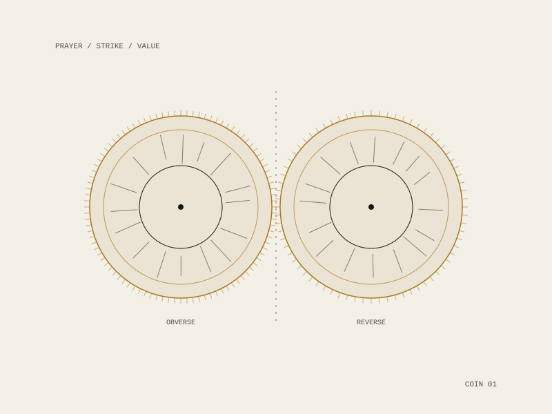

Prayer Coin
A coin struck for prayer: an object that borrows the whole apparatus of money — the disc, the milled edge, the two faces, the promise — and applies it to the one exchange that was never supposed to carry a denomination.

The proposition
A coin is a claim about worth that a stranger will honour without knowing you. Prayer is the opposite arrangement — unaccounted, unwitnessed, and not owed back. Striking one as the other puts the two systems in the same hand and lets the mismatch do the work.
It belongs to a line of work that holds that everything has a value, though not necessarily a price — and to a pair with the Unpaid Labor Coin, which takes the same form to the other unpriced thing.
Made during a fellowship and residency at the Recurse Center, where the surrounding question — what a currency is actually for — had a room full of people willing to argue about it.